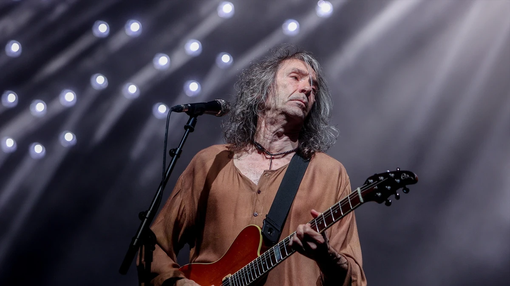
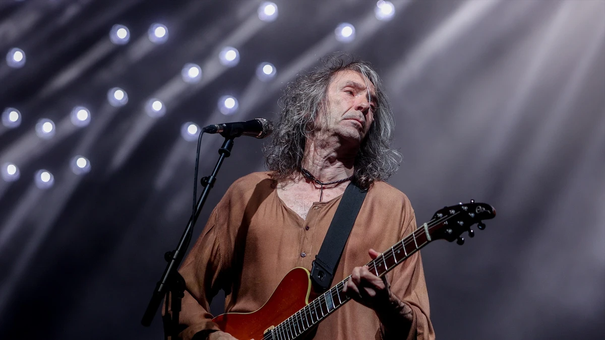

Inici
Explora les anècdotes i moments més interessants de la banda Robe.
Històries destacades
Descobreix detalls ocults sobre les cançons i les gires de Robe.
Explora les anècdotes i moments més interessants de la banda Robe.
Descobreix detalls ocults sobre les cançons i les gires de Robe.